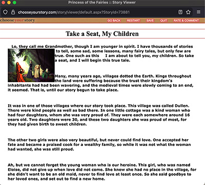
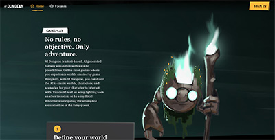

Comparitive Analysis
Exploring Choose Your Adventure Websites
As a kid I remember that one of my most favorite books was a choose your adventure "The Abominable Snowman" [website]. I want to create a simple interactive narrative that is based on this story!
Exploring Web Forms
As I explored the choose your own adventure websites on the web, I was a bit surprised by what I found. The first example that I found was a fairy tale story found on ChooseYourOwnStory.com.

This story is called Princess of the Fairies [website] about a fictional character named Eloise. The story is presented in a simple HTML and CSS way and gives the user a way to navigate via the navigation bar at the top.
At the bottom of the page there is a way to make the choices as it chooses between two different pages. The text effectively emerses one in the story and engages the user as they are encouraged to replay the story until they win by finding the correct story.
Honestly, the design did make me a bit sad as most of the content is text heavy with a little effort given to create a cohesive design.
Exploring AI

Next I explored a digital product that created unique stories through generative AI [website]. This format creates a comprehensive storytelling device primarily through images.
I am going to try to combine the emersive experience with a well design look that provides draws the user in so that they continue interacting with the design.